전기기사 (2011-06-12 기출문제)
1과목: 전기자기학
1. 간격에 비해서 충분히 넗은 평행판 콘덴서의 판 사이에 비유전율 εs 인 유전체를 채우고 외부에서 판에 수직방향으로 전계 E0 를 가할 때 분극전하에 의한 전계의 세기는 몇 [V/m] 인가?
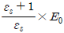
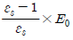
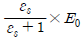
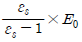
(정답률: 72%)

2. 진공 중에서 반지름이 4cm인 도체구 A와 내외 반지름이 5cm 및 10cm인 도체구 B를 동심으로 놓고 도체구 A에 QA=4×10-10[C]의 전하를 대전시키고 도체구 B의 전하를 0으로 했을 때 도체구 A의 전위는 약 몇 [V]인가?
- 15
- 30
- 46
- 54
(정답률: 55%)
3. 유전율 ε, 전계의 세기 E인 유전체의 단위 체적에 축적되는 에너지는 얼마인가?
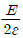
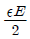
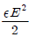
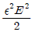
(정답률: 80%)
4. 간격이 1.5m이고 평행한 무한히 긴 단상 송전선로가 가설 되었다. 여기에 6600[V], 3[A]를 송전하면, 단위 길이당 작용하는 힘은?
- 1.2×10-3[N], 흡입력
- 5.89×10-5[N], 흡입력
- 1.2×10-6[N], 반발력
- 6.28×10-7[N], 반발력
(정답률: 47%)
5. 자성체에서 자기 감자력은?
- 자화의 세기 (J)에 비례한다.
- 감자율 (N)에 반비례한다.
- 자계 (H)에 반비례한다.
- 투자율 (μ)에 비례한다.
(정답률: 63%)
6. 전계 E[V/m], H[A/m]의 전자계가 평면파를 이루고 자유공간으로 전파될 때, 단위 시간당 전력밀도는 몇 [W/m2]인가?
- 1/2 EH
- 1/2 E2H
- E2H
- EH
(정답률: 76%)
7. 공기 콘덴서의 극판 사이에 비유전율 5인 유전체를 넣었을 때 동일 전위차에 대한 극판의 전하량은 어떻게 되는가?
- 5ε0배로 증가한다.
- 불변이다.
- 5배로 증가한다.
- 1/5 배로 감소한다.
(정답률: 68%)
8. 한변이 L[m] 되는 정방형의 도선 회로에 전류 I[A]가 흐르고 있을 때, 회로 중심에서의 자속밀도는 몇 [Wb/m2]인가?
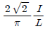
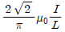
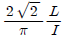
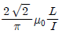
(정답률: 65%)
9. N회 감긴 원통 코일의 단면적이 S[m2]이고 길이가 l[m] 이다. 이 코일의 권수를 반으로 줄이고 인덕턴스는 일정하게 유지하려면 어떻게 하면 되는가?
- 길이를 1/4 로 한다.
- 단면적을 2배로 한다.
- 전류의 세기를 2배로 한다.
- 전류의 세기를 4배로 한다.
(정답률: 68%)
10. 그림과 같이 반지름 a[m]의 한번 감긴 원형 코일이 균일 한 자속밀도 B[Wb/m2] 인 자계에 놓여있다. 지금 코일 면을 자계와 나란하게 전류 I[A]를 흘리면 원형 코일이 자계로부터 받는 회전 모멘트는 몇 [Nm/rad]인가?
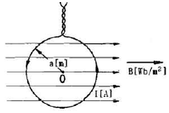
- 2πaBI
- πaBI
- 2πa2BI
- πa2BI
(정답률: 65%)
11. 진공 중에서 빛의 속도와 일치하는 전자파의 전파 속도를 얻기 위한 조건은?
- εs=μs=0
- εs=0, μs=1
- εs=μs=1
- εs와 μs는 관계가 없다.
(정답률: 79%)
12. 점전하 Q[C] 에 의한 무한 평면도체의 영상전하는?
- -Q[C] 보다 작다.
- Q[C] 보다 크다.
- -Q[C] 와 같다.
- Q[C] 와 같다.
(정답률: 68%)
13. 자기 인덕턴스가 20[mH]인 코일에 0.2[s]동안 전류가 100[A]로 변할 때 코일에 유기되는 기전력[V]은?
- 10
- 20
- 30
- 40
(정답률: 71%)
14. 도체 표면에서 전계 E=Exax+Eyay+Ezaz[V/m] 이고, 도체면과 법선 방향인 미소길이 dL=dxax+dyay+dzaz[m] 일 때 성립되는 식은?
- Exdx=Eydy
- Eydz=Ezdy
- Exdy=Eydz
- Eydy=Ezdz
(정답률: 58%)
15. 환상 솔레노이드 내의 철심 내부의 자계의 세기는 몇 [AT/m]인가? (단, N은 코일 권선수, R은 환성 철심의 평균 반지름, I는 코일에 흐르는 전류이다. )
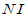
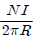
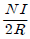
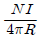
(정답률: 69%)
16. 다음 중 기자력(Magnetomotive Force)에 대한 설명으로 옳지 않은 것은?
- 전기 회로의 기전력에 대응한다.
- 코일에 전류를 흘렸을 때 전류 밀도와 코일의 권수의 곱의 크기와 같다.
- 자기회로의 자기 저항과 자속의 곱과 동일하다.
- SI 단위는 암페어[A]이다.
(정답률: 58%)
17. 철심이 있는 평균 반지름 15cm인 환상 솔레노이드 코일에 5A가 흐를 때 내부 자계의 세기가 1600AT/m가 되려면 코일의 권수는 약 몇 회 정도인가?
- 150
- 180
- 300
- 360
(정답률: 69%)
18. 아래의 그림과 같은 자기 회로에서 A부분에만 코일을 감아서 전류를 인가할 때의 자기 저항과 B부분에만 코일을 감아서 전류를 인가할 때의 자기저항 [AT/Wb]을 각각 구하면 어떻게 되는가? (단, 자기저항 R1=1, R2=0.5, R3=0.5이다.)
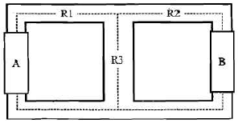
- RA=1.25, RB=0.83
- RA=1.25, RB=1.25
- RA=0.83, RB=0.83
- RA=0.83, RB=1.25
(정답률: 74%)
19. 자석의 세기 0.2[Wb], 길이 10cm인 막대자석의 중심에 서 60도의 각을 가지며 40cm만큼 떨어진 점 A의 자위는 몇 [A]인가?
- 1.97×103
- 3.96×103
- 7.92×103
- 9.58×103
(정답률: 47%)
20. 내반경 a[m], 외반경 b[m]인 동축케이블에서 극간 매질의 도전율이 σ[S/m]일 때 단위 길이당 이 동축 케이블의 컨덕턴스 [S/m]는?
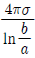
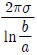
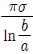
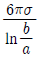
(정답률: 72%)
2과목: 전력공학
21. 3상 전원에 접속된 Δ결선의 콘덴서를 Y결선으로 바꾸면 진상 용량은 어떻게 되는가?
- √3 배로 된다
- 1/3 로 된다.
- 3 배로 된다.
- 1/√3 로 된다.
(정답률: 61%)
22. 다음 중 수차의 특유속도를 나타내는 식은? (단, N : 정격 회전수[rpm], H : 유효낙차[m]), P : 유효낙차 H[m]에서의 최대출력 [kW])
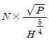
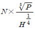
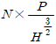
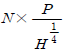
(정답률: 68%)
23. 한류 리액터의 사용 목적은?
- 누설 전류의 제한
- 단락 전류의 제한
- 접지 전류의 제한
- 이상 전압의 발생의 방지
(정답률: 77%)
24. 전선 지지점의 고저차가 없을 경우 경간 300[m]에서 이도 9[m]인 송전 선로가 있다. 지금 이 이도를 11[m]로 증가 시키고자 할 경우 경간에 더 늘려야 할 전선의 길이는 약 몇 cm인가?
- 25
- 30
- 35
- 40
(정답률: 50%)
25. 송전선 보호범위 내의 모든 사고에 대하여 고장점의 위치에 관계없이 선로 양단을 쉽고 확실하게 동시에 고속으로 차단하기 위한 계전 방식은?
- 회로 선택 계전 방식
- 과전류 계전방식
- 방향 거리 계전 방식
- 표시선 계전방식
(정답률: 47%)
26. 수력발전소에서 사용되는 수차 중 15m 이하의 저낙차에 적합하여 조력 발전용으로 알맞은 수차는?
- 카플란 수차
- 펠튼 수차
- 프란시스 수차
- 튜블러 수차
(정답률: 69%)
27. 가공 송전선로에서 선간 거리를 도체 반지름으로 나눈 값(D/r)이 클수록 인덕턴스와 정전용량은 어떻게 되는가?
- 인덕턴스와 정전용량이 모두 작아진다.
- 인덕턴스와 정전용량이 모두 커진다.
- 인덕턴스는 커지나, 정전용량은 작아진다.
- 인덕턴스는 작아지나, 정전용량은 커진다.
(정답률: 72%)
28. 수변전설비에서 1차측에 설치하는 차단기의 용량은 어느것에 의하여 정하는가?
- 변압기 용량
- 수전계약 용량
- 공급측 단락 용량
- 부하 설비 용량
(정답률: 67%)
29. 직접 접지방식에서 변압기에 단절연이 가능한 이유는?
- 고장 전류가 크므로
- 지락 전류가 저역률이므로
- 중성점 전위가 낮으므로
- 보호 계전기 동작이 확실하므로
(정답률: 55%)
30. 불평형 부하에서 역률은?
- 유효전력/각상의피상전력의산술합
- 무효전력/각상의피상전력의산술합
- 무효전력/각상의피상전력의벡터합
- 유효전력/각상의피상전력의벡터합
(정답률: 63%)
31. 탑각의 접지와 관련이다. 접지봉으로써 희망하는 접지저항치까지 줄일 수 없을 때 사용하는 것은?
- 가공지선
- 매설지선
- 크로스 본드선
- 차폐선
(정답률: 74%)
32. 30000kW의 전력을 50km 떨어진 지점에 송전하는데 필요한 전압은 약 몇 [kV]정도인가? (단, 스틸의 식에 의하여 산정한다. )
- 22
- 33
- 66
- 100
(정답률: 52%)
33. 송전선로의 코로나 임계전압이 높아지는 경우는?
- 기압이 낮아지는 경우
- 전선의 지름이 큰 경우
- 온도가 높아지는 경우
- 상대 공기밀도가 작은 경우
(정답률: 60%)
34. 다음 중 영상 변류기를 사용하는 계전기는?
- 과전류 계전기
- 저전압 계전기
- 지락 과전류 계전기
- 과전압 계전기
(정답률: 69%)
35. 수전단을 단락한 경우 송전단에서 본 임피던스가 300[Ω]이고, 수전단을 개방한 경우 송전단에서 본 어드미턴스가 1.875×10-3[℧] 일 때 송전선의 특성임피던스는 약 몇 [Ω]인가?
- 200
- 300
- 400
- 500
(정답률: 68%)
36. 애자가 갖추어야 할 구비조건으로 옳은 것은?
- 온도의 급변에 잘 견디고 습기도 잘 흡수해야 한다.
- 지지물에 전선을 지지할 수 있는 충분한 기계적 강도를 갖추어야 한다.
- 비, 누, 안개 등에 대해서도 충분한 절연내력을 가지며, 누선 전류가 많아야 한다.
- 선로 전압에는 충분한 절연 내력을 가지며, 이상 전압에는 절연 내력이 매우 작아야 한다.
(정답률: 69%)
37. 다음 중 고압 배전선로의 구성 순서로 알맞은 것은?
- 배전 변전소=>간선=>분기선=>급전선
- 배전 변전소=>급전선=>간선=>분기선
- 배전변전소=>간선=>급전선=>분기선
- 배전변전소=>급전선=>분기선=>간선
(정답률: 60%)
38. 다음 중 켈빈의 법칙이 적용되는 경우는?
- 전력 손실량을 축소시키고자 하는 경우
- 전압 강하를 감소시키고자 하는 경우
- 부하 배분의 균형을 얻고자 하는 경우
- 경제적인 전선의 굵기를 선정하고자 하는 경우
(정답률: 78%)
39. 다음 중 전동기 등 기계 기구류 내의 전로의 절연 불량으로 인한 감전 사고를 방지하기 위한 방법으로 거리가 먼것은?
- 외함 접지
- 저전압 사용
- 퓨즈 설치
- 누전 차단기 설치
(정답률: 53%)
40. 송전선로의 건설비와 전압과의 관계를 나타낸 것은?
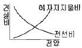
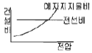
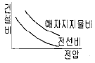
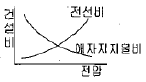
(정답률: 61%)
3과목: 전기기기
41. 변압기에서 철손을 알 수 있는 시험은?
- 유도 시험
- 단락 시험
- 부하 시험
- 무부하 시험
(정답률: 73%)
42. 보통 농형에 비하여 2중 농형 전동기의 특징인 것은?
- 최대 토크가 크다.
- 손실이 적다.
- 기동 토크가 크다.
- 슬립이 크다.
(정답률: 68%)
43. 동기기에서 동기 리액턴스가 커지면 동작 특성이 어떻게 되는가?
- 전압 변동률이 커지고 병렬 운전시 동기화력이 커진다.
- 전압 변동률이 커지고 병렬 운전시 동기 화력이 작아진다.
- 전압 변동률이 적어지고 지속단락 전류도 감소한다.
- 전압 변동률이 적어지고 지속 단락 전류는 증가한다.
(정답률: 55%)
44. 3상 직권 정류자 전동기에 중간(직렬)변압기가 쓰이고 있는 이유가 아닌 것은?
- 정류자 전압의 조정
- 회전자 상수의 감소
- 경부하 때 속도의 이상 상승 방지
- 실효 권수비 선정 조정
(정답률: 57%)
45. 병렬 운전 중의 A,B두 동기 발전기 중에서 A발전기의 여자를 B기보다 강하게 하면 A발전기는?
- 90도 앞선 전류가 흐른다.
- 90도 뒤진 전류가 흐른다.
- 동기화 전류가 흐른다.
- 부하 전류가 증가한다.
(정답률: 59%)
46. 유도 전동기의 제동법 중 유도 전동기를 전원에 접속한 상태에서 동기속도 이상의 속도로 운전하여 유도 발전기로 동작시킴으로써 그 발생 전력을 전원으로 반환하면서 제동하는 방법은?
- 발전제동
- 회생제동
- 역상제동
- 단상제동
(정답률: 66%)
47. 단권 변압기에서 W2 권선에 흐르는 전류의 크기[A]는?
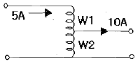
- 5
- 10
- 15
- 20
(정답률: 63%)
48. 4극 3상 유도 전동기가 있다. 총 슬롯수는 48이고 매극 매상 슬롯에 분포하고 코일 간격은 극간격의 75[%]의 단절권으로 하면 권선 계수는 얼마인가?
- 약 0.986
- 약 0.927
- 약 0.895
- 약 0.887
(정답률: 48%)
49. 자여식 인버터의 출력 전압의 제어법에 주로 사용되는 방식은?
- 펄스폭 방식
- 펄스 주파수 변조 방식
- 펄스폭 변조 방식
- 혼합 변조 방식
(정답률: 54%)
50. 4극, 중권, 총도체수 500, 1극의 자속수가 0.01[Wb]인 직류 발전기가 100[V]의 기전력을 발생시키는데 필요한 회전수는 몇 [rpm]인가?
- 1000
- 1200
- 1600
- 2000
(정답률: 68%)
51. 변압기의 기름 중 아크 방전에 의하여 가장 많이 발생하는 가스는?
- 수소
- 일산화 탄소
- 아세틸렌
- 산소
(정답률: 66%)
52. 다음 DC 서보모터의 기계적 시정수를 나타낸 것은? (단, R은 권선의 저항 J는 관성 모멘트 Ke는 서보 유기 전압정수, Kf 는 서보 모터의 도체 정수이다.)
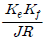
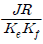
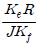
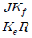
(정답률: 49%)
53. 정격 6600[V]인 3상 동기 발전기가 정격출력 (역률=1)으로 운전할 때 전압 변동률이 12[%]였다. 여자와 회전수를 조정하지 않은 상태로 무부하 운전하는 경우 단자전압은[V]?
- 7842
- 7392
- 6943
- 6433
(정답률: 66%)
54. 1차 전압 100[V], 2차 전압 200[V], 선로 출력 50[kVA]인 단권 변압기의 자기 용량은 몇 [kVA]인가?
- 25
- 50
- 250
- 500
(정답률: 54%)
55. 다음 전력용 반도체 중에서 가장 높은 전압용으로 개발되어 사용되고 있는 반도체 소자는?
- LASCR
- IGBT
- GTO
- BJT
(정답률: 57%)
56. 인가 전압과 여자가 일정한 동기 전동기에서 전기자 저항과 동기 리액턴스가 같으면 최대 출력을 내는 부하각은 몇도 인가?
- 30
- 45
- 60
- 90
(정답률: 41%)
57. 유도 전동기의 여자 전류는 극수가 많아지면 정격전류에 대한 비율이 어떻게 되는가?
- 적어진다.
- 원칙적으로 변화하지 않는다.
- 거의 변화하지 않는다.
- 커진다.
(정답률: 44%)
58. 전부하시에 전류가 0.88[A], 역률 89[%], 속도 7000[rpm], 60[Hz], 115[V]인 2극 단상 직권 전동기가 있다. 회전자와 직권계자 권선의 실효저항의 합은 58[Ω]이다. 이 전동기의 기계손을 10[W]라고 하면 전부하시에 부하에 전달되는 토크는 약 얼마인가? (단, 여기서 계자의 자속은 정현파 변화를 한다고 하고 브러시는 중성축에 놓여 있다.)
- 49[gㆍm]
- 4.9 [gㆍm]
- 48[Nㆍm]
- 4.8 [Nㆍm]
(정답률: 40%)
59. 5[kVA]의 단상 변압기 3대를 Δ결선하여 급전하고 있는 경우 1대가 소손되어 나머지 2대로 급전하게 되었다. 2대의 변압기로 과부하를 10[%]까지 견딜 수 있다고 하면 2대가 분담할 수 있는 최대 부하는 약 몇 [kVA]인가?
- 5
- 8.6
- 9.5
- 15
(정답률: 54%)
60. 직류 분권 전동기가 있다. 그 출력이 9[kW]일 때, 단자 전압은 220[V], 입력전류는 51.5[A], 계자 전류는 1.5[A], 회전속도는 1500[rpm]이었다. 이때의 발생 토크[kgㆍm]와 효율[%]은? (단, 전기자 저항은 0.1[Ω]이다. )
- 5.85, 94.8
- 6.98, 79.4
- 36.74, 79.4
- 57.33, 94.8
(정답률: 40%)
4과목: 회로이론 및 제어공학
61.
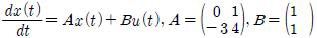
인 상태 방정식에 대한 특성방정식을 구하면?- s2-4s-3=0
- s2-4s+3=0
- s2+4s+3=0
- s2+4s-3=0
(정답률: 64%)
62. 다음의 신호흐름 선도에서 C/R는?
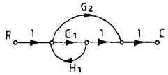
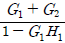
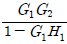
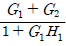
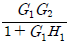
(정답률: 66%)
63. 특성방정식 s2+Ks+2K-1=0 제어계가 안정될 K 의 범위는?
- K > 0
- k > 1/2
- K < 1/2
- 0 < K < 1/2
(정답률: 64%)
64. 논리식
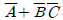
와 같은 논리식은?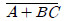
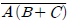
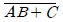
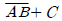
(정답률: 63%)
65. 기준 입력과 주궤환량의 차로서, 제어계의 동작을 일으키는 원인이 되는 신호는?
- 조작신호
- 동작신호
- 주궤환 신호
- 기준 입력 신호
(정답률: 64%)
66. 제어계 전달함수의 극값(pole)이 그림과 같을 때 이 계의 고유 각주파수 ωn는?
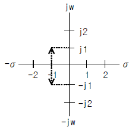
- 1/√2
- 1/2
- √2
- √3
(정답률: 52%)
67. 그림과 같은 보드 위상선도를 갖는 회로망은 어떤 보상기로 사용될 수 있는가?
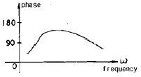
- 진상 보상기
- 지상 보상기
- 지상 진상 보상기
- 지상 지상 보상기
(정답률: 57%)
68.
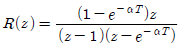
의 역변환은?- 1-e-akT
- 1+e-akT
- te-aT
- teaT
(정답률: 52%)
69. 근궤적
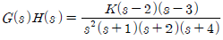
에서 점근선의 교차점은?- -6
- -4
- 6
- 4
(정답률: 67%)
70. ω 가 0 에서 ∞까지 변화하였을 때 G(jω)의 크기와 위상각을 극좌표에 그린 것으로 이 궤적을 표시하는 선도는?
- 근궤적도
- 나이퀴스트 선도
- 니콜스 선도
- 보드 선도
(정답률: 53%)
71. 평형 3상 회로에서 그림과 같이 변류기를 접속하고 전류계를 연결하였을 때, A2에 흐르는 전류는 약 몇 [A]인가?
- 0
- 5
- 8.66
- 10
(정답률: 60%)
72. 어떤 콘덴서를 300[V]로 충전하는데 9[J]의 에너지가 필요하였다. 이 콘덴서의 정전용량은 몇 [μF]인가?
- 100
- 200
- 300
- 400
(정답률: 65%)
73. 분포 정수회로에서 선로정수가 R,L,C,G이고 무왜형 조건이 RC=LG과 같은 관계가 성립될 때 선로의 특성 임피던스Z0는? (단, 선로의 단위 길이당 저항을 R, 인덕턴스를 L, 정전용량을 C, 누설 컨덕턴스를 G라 한다.)
(정답률: 74%)
74. 다음 그림은 전압이 10[V]인 전원장치에 가변저항과 전열기를 연결한 회로이다. 가변저항이 5[Ω]일 때, 회로에흐르는 전류는 1[A]이다. 가변저항을 15[Ω]으로 바꾸고 전열기를 4초 동안 사용 할 경우 전열기에서 소비되는 전력[W]은 얼마인가? (단, 전원장치의 전압과 전열기의 저항은 일정하다)
- 1.25
- 1.5
- 1.88
- 2.0
(정답률: 50%)
75. 대칭 5상 교류 성형결선에서 선간전압과 상전압 간의 위상차는 몇 도인가?
- 27
- 36
- 54
- 72
(정답률: 66%)
76. 그림과 같은 파형의 라플라스 변환은?
(정답률: 49%)
77. 그림과 같은 회로의 전달함수 는?
(정답률: 61%)
78. 직류를 공급하는 R-C직렬회로에서 회로의 시정수 값은?
- R/C
- C/R
- 1/(RC)
- RC
(정답률: 58%)
79. 전류원의 내부저항에 관하여 맞는것은?
- 전류 공급을 받는 회로의 구동점 임피던스와 같아야 한다.
- 클수록 이상적이다.
- 경우에 따라 다르다.
- 작을수록 이상적이다.
(정답률: 50%)
80. 임피던스 Z(s)가 으로 주어지는 2단자 회로에 직류 전류원 10[A]를 가할 때 이 회로의 단자 전압 [V]은?
- 20
- 40
- 200
- 400
(정답률: 54%)
5과목: 전기설비기술기준 및 판단기준
81. 전기 울타리의 시설에 관한 내용 중 틀린 것은?
- 수목과의 이격거리는 30cm 이상일 것
- 전선은 지름이 2mm 이상의 경동선일 것
- 전선과 이를 지지하는 기둥 사이의 이격거리는 2cm 이상 일 것
- 전기 울타리용 전원장치에 전기를 공급하는 전로의 사용 전압은 250V 이하일 것
(정답률: 41%)
82. 전기 욕기의 시설에서 전기 욕기용 전원장치로부터 욕탕안의 전극까지의 전선 상호간 및 전선과 대지 사이의 절연저항 값은 몇 MΩ 이상이어야 하는가?(오류 신고가 접수된 문제입니다. 반드시 정답과 해설을 확인하시기 바랍니다.)
- 0.1
- 0.2
- 0.3
- 0.4
(정답률: 53%)
83. 가공 전선로의 지지물에 시설하는 지선의 시설 기준에 대한 설명 중 알맞은 것은?
- 지선의 안전율은 3.0이상이어야 한다.
- 연선을 사용할 경우에는 소선 3가닥 이상이어야 한다.
- 지중의 부분 및 지표상 20cm 까지의 부분에는 내식성이 있는 것 또는 아연도금을 한다.
- 도로를 횡단하여 시설하는 지선의 높이는 지표상 4m 이상으로 하여야 한다.
(정답률: 75%)
84. 저압 전로에서 그 전로에 지락이 생겼을 경우 0.5초 이내에 자동적으로 전로를 차단하는 자동 차단기의 정격감도 전류를 100[mA]로 하여 설치하고자 하는데, 이 때 제 3종 접지공사의 저항값은 몇 [Ω]이하로 하여야 하는가? (단, 전기적 위험도가 높은 장소이다.)(오류 신고가 접수된 문제입니다. 반드시 정답과 해설을 확인하시기 바랍니다.)
- 150
- 200
- 300
- 500
(정답률: 48%)
85. 저압 옥측전선로의 시설로 잘못된 것은?
- 철골주 조영물의 버스덕트 공사로 시설
- 합성 수지관 공사로 시설
- 목조 조영물에 금속관 공사로 시설
- 전개된 장소에 애자사용 공사로 시설
(정답률: 62%)
86. 사용전압 66[kVA] 가공전선과 6[kV] 고공 전선을 동일지지물에 시설하는 경우, 특고압 가공전선은 케이블인 경우를 제외하고는 단면적이 몇 mm2 인 경동연선 또는 이와 동등 이상의 세기 및 굵기의 연선이어야 하는가?(오류 신고가 접수된 문제입니다. 반드시 정답과 해설을 확인하시기 바랍니다.)
- 22
- 38
- 55
- 100
(정답률: 63%)
87. 직류식 전기철도에서 배류선은 상승부분 중 지표상 몇 m 미만의 부분에 대하여는 절연전선, 캡타이어 케이블 또는 케이블을 사용하고, 사람이 접촉할 우려가 없고 또한 손상을 받을 우려가 없도록 시설하여야 하는가?(오류 신고가 접수된 문제입니다. 반드시 정답과 해설을 확인하시기 바랍니다.)
- 2.0
- 2.5
- 3.0
- 3.5
(정답률: 36%)
88. 합성수지관 공사에 의한 저압 옥내배선 시설방법에 대한 설명 중 틀린 것은?
- 관의 지지점 간의 거리는 1.2m 이하로 할 것
- 박스 기타의 부속품을 습기가 많은 장소에 시설하는 경우에는 방습 장치로 할 것
- 사용 전선은 절연전선일 것
- 합성 수지관 안에는 전선의 접속점이 없도록 할 것
(정답률: 61%)
89. 특고압 가공전선로의 지지물 중 전선로의 지지물 양쪽의 경간의 차가 큰 곳에 사용하는 철탑은?
- 내장형 철탑
- 인류형 철탑
- 보강형 철탑
- 각도형 철탑
(정답률: 71%)
90. 인가가 많이 연접되어 있는 장소에 시설하는 가공전선로의 구성재 중 고압 가공전선로의 지지물 또는 가섭선에 적용하는 풍압하중에 대한 설명으로 옳은 것은?
- 갑종 풍압하중의 1.5배를 적용시켜야 한다.
- 을종 풍압하중의 2배를 적용시켜야 한다.
- 병종 풍압하중을 적용시킬 수 있다.
- 갑종 풍압하중과 을종 풍압하중 중 큰 것만 적용시킨다.
(정답률: 53%)
91. 태양 전지 발전소에 시설하는 태양전지 모듈 시설에 대한 설명 중 틀린 것은?
- 충전부분은 노출되지 아니하도록 시설할 것
- 태양전지 모듈에 접속하는 부하측 전로에는 그 접속점에 멀리하여 개폐기를 시설할 것
- 전선은 공칭 단면적 2.5 이상의 연동선 또는 동등 이상의 세기 및 굵기일 것
- 태양전지 모듈을 병렬로 접속하는 전로에는 전로를 보호하는 과전류 차단기 등을 시설할 것
(정답률: 58%)
92. 뱅크 용량이 10000[kVA]이상인 특고압 변압기의 내부고장이 발생하면 어떤 보호장치를 설치하여야 하는가?
- 자동 차단장치
- 경보 장치
- 표시 장치
- 경보 및 자동 차단 장치
(정답률: 48%)
93. 특고압 가공전선로의 전선으로 케이블을 사용하는 경우의 시설로 옳지 않은 방법은?
- 케이블은 조가용선에 행거에 의하여 시설한다.
- 케이블은 조가용선에 접촉시키고 비닐테이브 등을 30cm 이상의 간격으로 감아 붙인다.
- 조가용선은 단면적 22 이상의 아연도강연선 또는 동등 이상의 세기 및 굵기의 연선을 사용한다.
- 조가용선 및 케이블의 피복에 사용한 금속체네는 제3종 접지 공사를 한다.
(정답률: 61%)
94. 특고압 가공전선로의 전로와 저압 전로를 변압기에 의하여 결합하는 경우의 제 2종 접지공사에 사용하는 연동 접지선 굵기는 최소 몇 mm2 이상인가?(오류 신고가 접수된 문제입니다. 반드시 정답과 해설을 확인하시기 바랍니다.)
- 0.75
- 2.5
- 6
- 8
(정답률: 48%)
95. 사용전압 22.9kVA 특고압 가공전선과 저고압 가공전선 등 또는 이들의 지지물이나 지주 사이의 이격거리는 최소 몇 m 이상이어야 하는가? (단, 특고압 가공전선이 저고압 가공전선과 제1차 접근상태일 경우이다.)
- 1.2
- 2
- 2.5
- 3
(정답률: 46%)
96. 엘리베이터 등의 상강로 내에 시설되는 저압 옥내배선에 사용되는 전압의 최대한도는?
- 250V 미만
- 300V 미만
- 400V 미만
- 600V 미만
(정답률: 57%)
97. 2차측 개방전압이 7kV 이하인 절연변압기를 사용하고 절연 변압기의 1차측 전로를 자동적으로 차단하는 보호장치를 시설한 경우의 전격 살충기는 전격 격자가 지표상 또는 마루 위 몇 m 이상의 높이에 설치하여야 하는가?
- 1.5
- 1.8
- 2.5
- 3.5
(정답률: 49%)
98. 전력보안 가공 통신선을 횡단보도교 위에 시설하는 경우에는 그 노면상 몇 m 이상의 높이에 설치하여야 하는가?
- 3
- 3.5
- 4
- 4.5
(정답률: 35%)
99. 과전류 차단기로서 저압 전로에 사용하는 400[A] 퓨즈를 수평으로 붙여서 시험할 때 정격전류의 1.6배 및 2배의 전류를 통하는 경우 각각 몇 분 안에 용단되어야 하는가?
- 60분, 4분
- 120분, 6분
- 120분, 8분
- 180분, 10분
(정답률: 45%)
100. 제 3종 접지 공사 및 특별 제 3종 접지 공사의 접지선에 다심 코드 또는 다심 캡타이어 케이블의 일심을 사용하는 경우의 접지선의 최소 굵기는 몇 [mm2]인가?
- 0.75
- 1.25
- 6
- 8
(정답률: 59%)